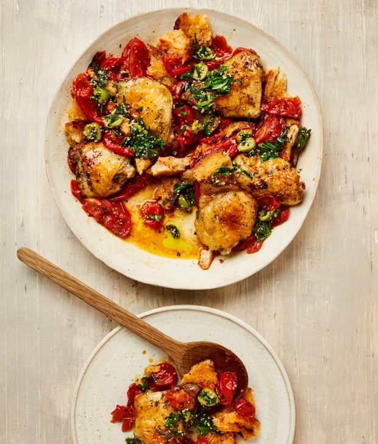

Roast chicken with tomatoes, bread and herbs

This dish is inspired by Mediterranean flavours. Feel free to use any in-season tomatoes that you have at hand. Serve with a big green salad or some boiled potatoes.
For the herb salsa
Heat the oven to 200C (180C fan)/390F/gas 6. Put the chicken in a large bowl and rub with the dry herbs and three quarters of a teaspoon of salt. Put a large, high-sided, ovenproof saute pan for which you have a lid over a high heat. Add a tablespoon of the oil to the pan, along with both varieties of tomatoes, and a quarter of a teaspoon of salt, then fry for five minutes, stirring occasionally, until the tomatoes begin to break down and release their juices. Put the chicken skin-side up on the tomatoes, pour in the vinegar, cover with the lid and put in the oven for 40 minutes.
Turn the oven up to 220C (200C fan)/425F/gas 7, remove the lid and bake for a further 20 minutes. Remove from the oven and transfer the chicken to a tray. Return the pan to the oven for five to 10 minutes, until the tomato mixture has thickened and slightly charred.
Meanwhile, make the herb salsa. Put the sesame, dry and fresh herbs (apart from the mint) in a small heatproof bowl and set aside. Put a small frying pan on medium heat and add the oil and garlic. Cook for three to five minutes, until golden and fragrant. Quickly and carefully, pour the oil into the herb bowl and stir to coat. Leave to cool, then stir in the olives, mint, lemon zest and juice with a quarter teaspoon of salt and a good grind of pepper.
Stir the bread into the tomato mixture and put the chicken on top. Spoon some of the tomato juices over the chicken with a good grind of pepper. Serve with the salsa on top.